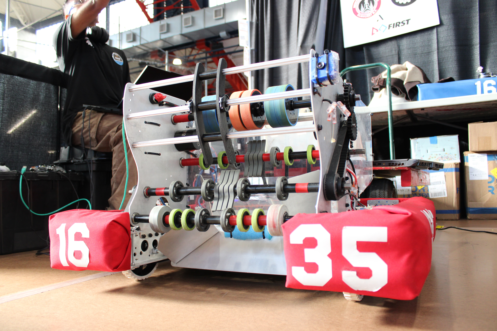

Rookie season
Team 1635 fields its first robot — the start of an unbroken run out of Newtown High School.
Every January FIRST hands us a rulebook and a box of parts. Six weeks later a 120-pound machine rolls off the shop floor at Newtown High School. This is the twenty-first winter we have done it.
Newtown High School sits in Elmhurst, a neighbourhood where the students collectively speak dozens of languages. Every winter a chunk of them spend their nights over a CAD model, a soldering iron and a half-built drivetrain.
There is no tryout. Freshmen who have never held a drill end the season running a mill, flashing a RoboRIO, or standing at the field wall as drive team. The robot is the excuse; the engineers are the point.
Since our rookie year we have competed every single season — most recently at the NYC Regional inside the Armory, where you will find us in the stands holding three-foot red 16 and 35 and never quite sitting down.
The full rosterCustom six-wheel base, compliant-roller intake, two-stage elevator and a flywheel launcher. Drawn in CAD, cut on our own mill, tuned until the last hour before load-in.
Every subsystem starts as plywood and zip-ties.
Week two of build season the shop fills with prototypes that mostly do not work. The two or three that survive get toleranced, machined and bolted to a frame. That is the whole method — build the bad version fast, learn from it, then build the real one.
Specs, CAD and the exploded view
Written from the shop floor during build season, and from the stands during competition.
Registration, raw stock, machining, replacement motors and a bus to the Armory. These partners close the gap.

Their logo goes on the bumper. Their name goes in every match.
Sponsorship at any level is tax-deductible and goes straight into parts, registration and travel — not overhead. We will send the packet the same day you ask for it.
See the partnersTeam 1635 fields its first robot — the start of an unbroken run out of Newtown High School.
Twenty-one consecutive years of designing, building and competing every single winter.
Our home event runs at the Fort Washington Avenue Armory under the NYC FIRST banner.
Mechanical, electrical, programming, design and business — plus faculty and engineer mentors.
Demos and workshops in schools across the borough, recruiting the next crew of builders.
Lived in the pit — we lend a tool to the team we are about to play against.